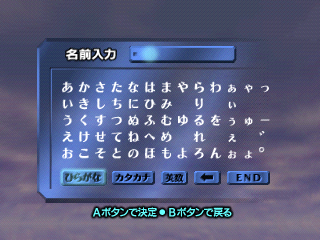
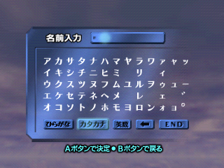
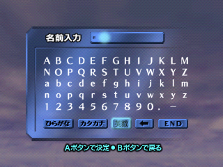
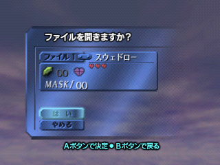
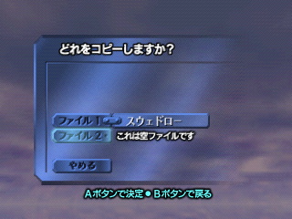
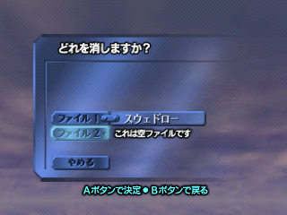

|  |
| | k | s | t | n | h | m | y | r | w | small | mark |
| a | あ | か | さ | た | な | は | ま | や | ら | わ | ぁ | ゃ | っ |
| i | い | き | し | ち | に | ひ | み | | り | | ぃ | | |
| u | う | く | す | つ | ぬ | ふ | む | ゆ | る | を | ぅ | ゅ | ー |
| e | え | け | せ | て | ね | へ | め | | れ | | ぇ | | ゛ |
| o | お | こ | そ | と | の | ほ | も | よ | ろ | ん | ぉ | ょ | ゜ |
|
|  |
| | k | s | t | n | h | m | y | r | w | small | mark |
| a | ア | カ | サ | タ | ナ | ハ | マ | ヤ | ラ | ワ | ァ | ャ | ッ |
| i | イ | キ | シ | チ | ニ | ヒ | ミ | | リ | | ィ | | |
| u | ウ | ク | ス | ツ | ヌ | フ | ム | ユ | ル | ヲ | ゥ | ュ | ー |
| e | エ | ケ | セ | テ | ネ | ヘ | メ | | レ | | ェ | | ゛ |
| o | オ | コ | ソ | ト | ノ | ホ | モ | ヨ | ロ | ン | ォ | ョ | ゜ |
|
|  | This is the Latin-based character set for using English in naming the file. Code points for these characters range from 0xAB for the capital letter A all the way down to 0xDE for the lowercase letter z, not counting the final row of decimal digits and the period, dash, and space characters.
Translation of the buttons and remaining kana characters still on this screen are yet to be evaluated. |
|  | "File", being a foreign word not native to the Japanese language, is written as ファイル (FU-a-I-RU). The full question, ファイルを開きますか (fuairu [w]o (object declarator) kai (kanji for "open") kimasuka, literally just asks if you want to open the file. (A basic translation of this writer's last name is chosen for the file name.)
The first of the two button answer options (which is highlighted in this screen) is the normal Japanese affirmative answer, はい. The subsequent button, however, is not so easy to read due to the small font. Depending on how hard you squint at the third glyph's bottom stroke, it could say either yamero (やめろ) or, perhaps more likely, yameru (やめる). The former means "stop" in English, while the latter means "quit;" it is more likely that "quit" makes more contextual sense and is, after all, the translation that Nintendo of America, Inc. chose. |
|  | This time, the question is どれをコピーしますか (or dore[w]o kopii shimasuka). Since "copy" is another foreign word not directly present in Japanese, the sound "kopii" is used in modern times as a way of adopting the Latin parts to their language. |
|  | This time, the question is どれを消しますか (or dore[w]o shou shimasuka). |